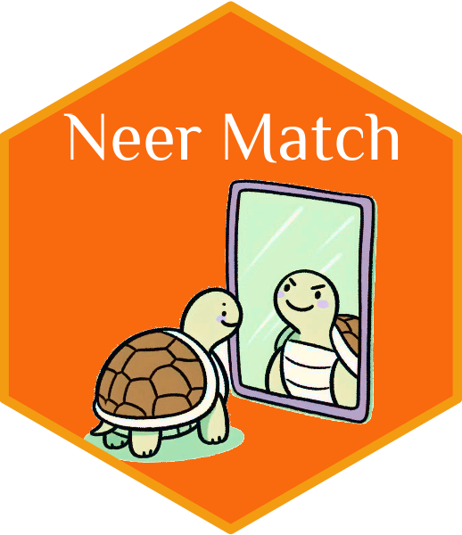

Neer Match Utilities

The framework neermatch provides a set of tools for entity matching
based on deep learning, symbolic learning, and a hybrid approach
combining both deep and symbolic learning. It is designed to support
easy set-up, training, and inference of entity matching models. The
package provides automated fuzzy logic reasoning (by refutation)
functionality that can be used to examine the significance of particular
associations between fields in an entity matching task.
The neermatch framework encompasses three packages:
py-neer-match: ThePythonimplementation of the basic functionalities. Learn morepy-neer-utilities: APythonpackage that provides additional functionalities to streamline and support the entity matching workflow. (this project)r-neer-match: TheRimplementation of the basic functionalites. Learn more
The project is financially supported by the Deutsche
Forschungsgemeinschaft (DFG) under Grant
539465691 as part of the Infrastructure Priority Programme New Data
Spaces for the Social Sciences
(SPP 2431). Reading the article Karapanagiotis and Liebald
(2023)
helps to understand the theoretical foundation and design of neermatch
(note that the article refers to an earlier version of the framework,
previously labeled as mlmatch).
The documentation provides examples of how neermatch may be used. The
data used in these examples are available in this
folder
of the GitHub repository.
Contributors
Marius Liebald (maintainer)
Pantelis Karapanagiotis (contributor)
Installation
pip install neer-match
pip install neer-match-utilities
Official Documentation
The documentation is hosted under https://www.marius-liebald.com/py-neer-utilities/index.html
License
The package is distributed under the MIT license.
References
Bénédict, Gabriel, Vincent Koops, Daan Odijk, and Maarten de Rijke. 2022. “sigmoidF1: A Smooth F1 Score Surrogate Loss for Multilabel Classification.” https://arxiv.org/abs/2108.10566.
Gram, Dennis, Pantelis Karapanagiotis, Marius Liebald, and Uwe Walz. 2022. “Design and Implementation of a Historical German Firm-Level Financial Database.” ACM Journal of Data and Information Quality (JDIQ) 14 (3): 1–22. https://doi.org/10.1145/3531533.
Karapanagiotis, Pantelis, and Marius Liebald. 2023. “Entity Matching with Similarity Encoding: A Supervised Learning Recommendation Framework for Linking (Big) Data.” http://dx.doi.org/10.2139/ssrn.4541376.
———. 2024a. “NEural-symbolic Entity Reasoning and Matching (Python Neer Match).” https://github.com/pi-kappa-devel/py-neer-match.
———. 2024b. “NEural-symbolic Entity Reasoning and Matching (R Neer Match).” https://github.com/pi-kappa-devel/r-neer-match.
Lin, Tsung-Yi, Priya Goyal, Ross Girshick, Kaiming He, and Piotr Dollár. 2017. “Focal Loss for Dense Object Detection.” In Proceedings of the IEEE International Conference on Computer Vision (ICCV), 2980–88. IEEE. https://doi.org/10.1109/ICCV.2017.324.